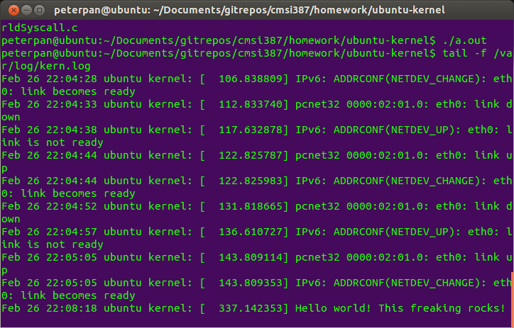

*Note that this how-to page is specifically for the Ubuntu 3.5.0-25-generic kernel*
General Building Steps
From Dr. Dionisio's "Linux Kernel Building and Modification -- A Conceptual Guide" handout:
Here is Dr. Dionisio's full handout* Acquire the kernel source code
* Acquire prerequisite software
* Linux kernel code supports multiple architectures--be aware that not all source files will apply to your build
* Configure the kernel (for your architecture)
* Start the actual build sequence
* Install the build products
Modification Steps
The first thing you need to do is add your new syscall to the syscall table. Depending on the kernel you've obtained, the location of this file may be different from that described here, but in general, you're looking for a file with a name close to "syscall_32.tbl". In my case, the file is located in
ubuntu-quantal/arch/x86/syscalls/syscall_32.tbl
Once you locate this file, you will want to add the following line to the end of the list of syscalls. Note that the first number is the hardcoded number that can be used to directly call our new helloworld syscall. The second number denotes the type of system we're working with. The third element of the line is the name of the syscall if one wanted to call it on the commandline. The fourth element of this line of code is the name of the function that will be called when the system call is called.
350 i386 helloworld sys_helloworld
Next, in the syscalls_32.S file, you need to tell the kernel what type of output your system call is going to generate. In this case, since we're just writing a simple hello world, we are just going to return a long. The location of this file in my kernel is
ubuntu-quantal/arch/sh/kernel/syscalls_32.S
.long sys_helloworld
Now you need to define helloworld as a constant which will be used by the kernel when you call your helloworld system call. The place to do this is in the header file called unistd_32.h which is located in
ubuntu-quantal/arch/sh/include/asm/unistd_32.h
#define __NR_helloworld 367
#define NR_syscalls 368
Next, we need to tell the syscalls header file what signature it's looking for when searching for your system call. This is done by adding the a line of code to the syscalls.h file which is located in
ubuntu-quantal/include/linux/syscalls.h
asmlinkage long sys_helloworld(void);
Finally, you get to write your system call! Create a file with the name "sys_helloworld.c". This corresponds to the name we added to the syscall table. You will want to put this file in a new directory located in the root directory of your (used-to-be!)vanilla kernel. My folder is called "/test", but you can call it whatever you like, but for the rest of this *howto*, I will be referring to this folder as "test". So save your .c file in this new folder and for a simple hello world program, all you need in the file is
#include
asmlinkage long sys_helloworld(void) {
printk("Hello world! This freaking rocks!\n");
return 0;
}
The next step is to link your system call to the kernel so it knows where the function is when the system call gets called. The first element of this linking process is creating a Makefile. When the kernel is being built, it searches for anything called "Makefile" and uses its references to locate the object files necessary to build. Create a file called "Makefile" in your "/test" directory and the only thing you need to put in it is
obj-y := sys_helloworld.o
ubuntu-quantal/Makefile
core-y += kernel/ mm/ fs/ ipc/ security/ crypto/ block/
core-y += kernel/ mm/ fs/ ipc/ security/ crypto/ block/ test/
The last step before building your kernel is writing a C program which calls your new system call. This can be located wherever you like and named whatever you like, just like a normal C program. The contents of my C program are
#include
#include
#include
#include
int main(int argc, char *argv[]) {
int result = syscall(350);
if (result == -1) {
char *errorMessage = "Oh no! My kernel fails";
}
return result;
}
Build Steps
Now it's time to actually build your newly modified kernel! From the root directory of your kernel, on the commandline, enter this command
fakeroot debian/rules clean
*(Note that this takes me 2 hours so don't be alarmed if it takes your machine a while to complete this task. Also note that I am running in a virtual machine\on a laptop, so if you're on a desktop, things may run more quickly)*
fakeroot debian/rules binary-headers binary-generic
sudo dpkg -i linux*3.5.0-25*.deb
sudo reboot
Testing
Once your system has rebooted, you are going to want to execute your C program which used your new system call. To check to see if your syscall worked, look in your kernel log. This can be done using the following command on the commandline
tail -f /var/log/kern.log
My output looked like this
And you're done!